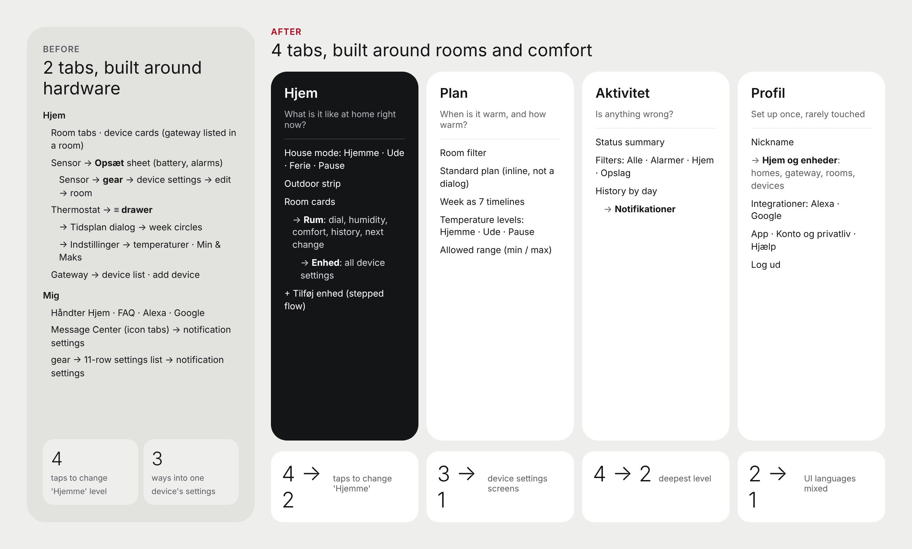
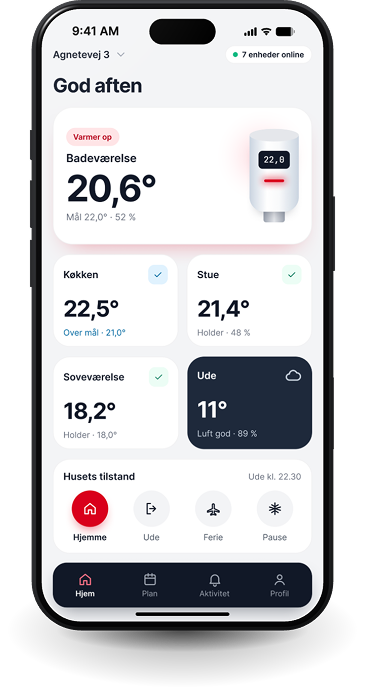
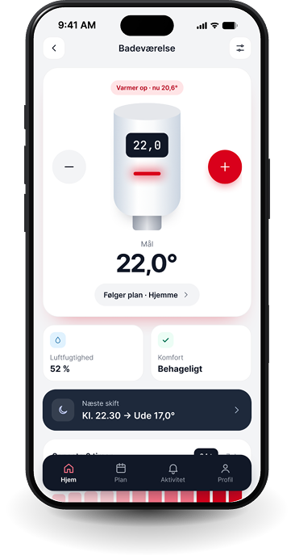
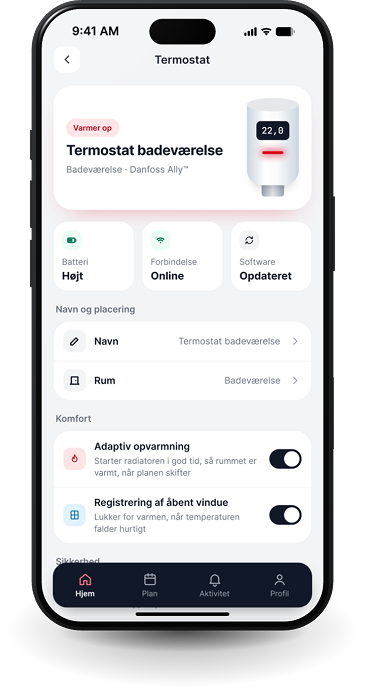
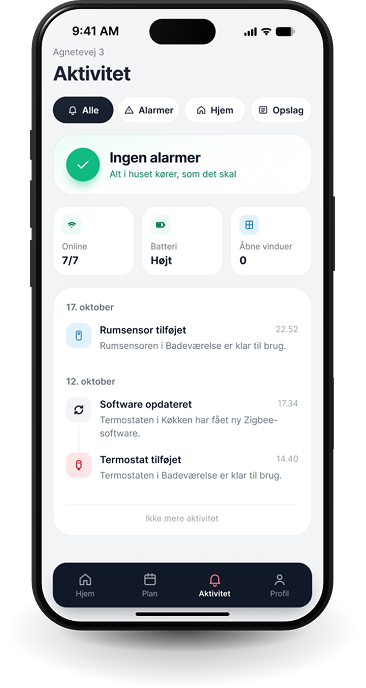
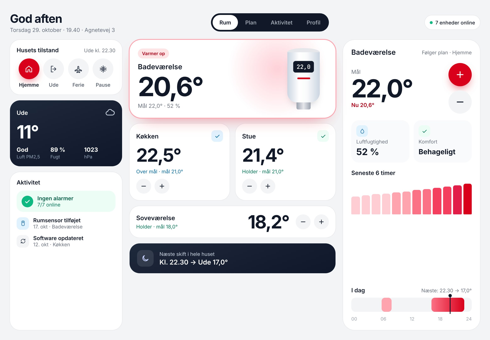
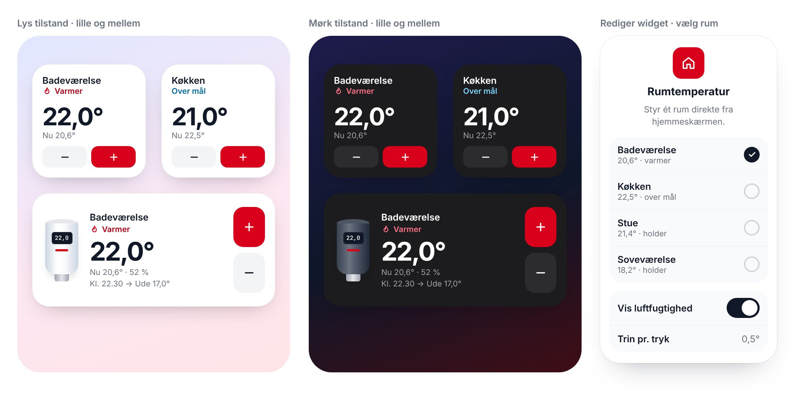

A thermostat app, rebuilt around rooms
Same palette, every existing function kept, a new structure. Two taps instead of four. One settings screen instead of three.
Badeværelse
20,6°
Mål 22,0° 52 %
Try it: the device itself is the dial, half a degree per tap.

I redesigned the Danfoss Ally app around rooms instead of hardware. The brief I set myself had three rules: keep the existing Ally colour palette, keep every function the app has today, and improve the information architecture wherever possible.
- Type
- Self-initiated concept redesign. Not affiliated with Danfoss.
- Role
- Research, information architecture, UI, design system
- Platform
- iOS and iPadOS
- Delivered
- App map, new IA, 9 iPhone screens, iPad dashboard, iOS widget, Figma library
The app is organised the way the hardware is wired, not the way people think about their home.
- Is it warm enough?
- When does the heating change?
- Is anything wrong?
Answering those everyday questions meant opening individual devices and digging through drawers, sheets and gear icons. I mapped all 24 screens from a 2:20 walkthrough of the live app, and the map became the contract: every function on it had to have a place in the new structure.
The same functions, fewer steps to reach them
- 4 → 2taps to change the Hjemme level
- 3 → 1screens for one device’s settings
- 4 → 2deepest level for everyday tasks
- 2 → 1languages in the UI
Structural measures from the redesign, not tested task times.
Four tabs, each answering one question
Hjem
What is it like at home right now?
Plan
When is it warm, and how warm?
Aktivitet
Is anything wrong?
Profil
Things you set up once.

The biggest moves were regroupings, not new features. The schedule, levels and limits moved to Plan. Message Center became Aktivitet. The gateway moved out of the room grid.

You see which room needs you before reading a number
The heating bathroom gets the large tile with the drawn thermostat; rooms that are fine stay small. Each tile merges thermostat and sensor into one reading.
The “7 enheder online” pill answers “is anything wrong?”. Husets tilstand joins Ferie with the Hjemme, Ude and Pause levels in one control, with red only on the active mode.

One room, one screen, and the device itself is the dial
The target is shown on the thermostat’s own display and changed with two large − / + buttons, 0,5° per tap.
Sensor and thermostat used to be two screens with different patterns. Humidity and comfort now sit as tiles, and a dark “Næste skift” tile shows what the plan does next without leaving the room.

Three buried screens in one tab, opening straight on today
The old schedule opened on a confirm dialog. Plan opens on today as a timeline, with a “Nu” row that shows where in the plan you are.
The levels are tiles. Hjemme is the large red one because it is used most, and changing it takes two taps, down from four.

One settings screen per device
Enhed replaces a sheet, a gear page and a drawer page. Every toggle carries one explaining line.

Alerts get their own tab
Status first, history second. Icon-only tabs became labelled chips, and “no alarms” is said positively.

A setup that shows what “ready” looks like
Pairing is a stepped flow. The gateway is drawn with two green lights, so people compare the picture with the box on their shelf.
The house at a glance, from across the kitchen
A shared device on a wall or table, read at one to two metres. Whole-house things on the left, rooms in the centre, the selected room on the right.
Every room tile has − / + on it, so a whole house can be adjusted without navigating.

Change one room from the home screen, with zero navigation

Most of the friction was structural, not visual
The biggest gains came from regrouping existing functions, not from new features or a new look.
This is a concept based on my own walkthrough, with no user research behind it. The rooms are examples and their readings are made up.
What I would validate next
- A tree test of the four tabs against the current two, with tasks like “set the away temperature”.
- A usability test of the − / + control against the old scroll wheel.
- Whether Ferie belongs in “Husets tilstand” or needs its own date range.
- A dark mode for the iPad, since a wall display is often viewed in the evening.